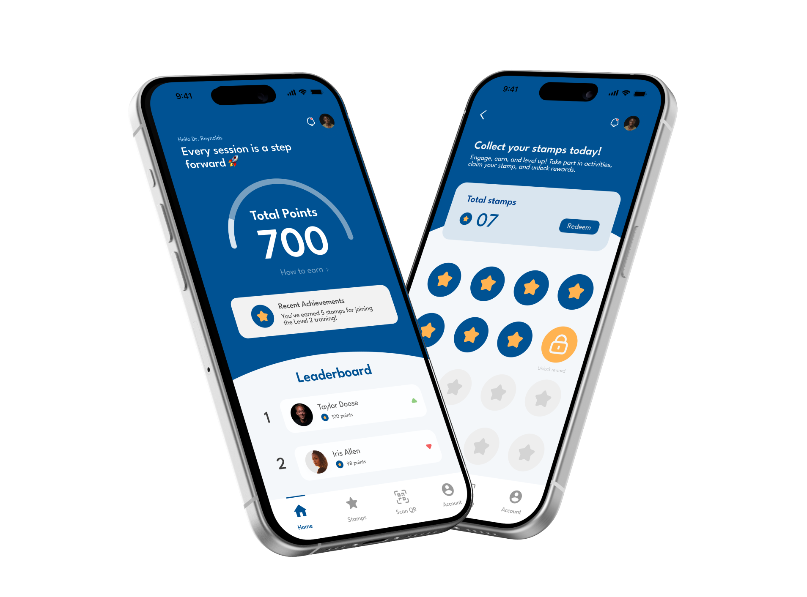

PulsePoints

PulsePoints is a mobile rewards system designed to promote consistent, long-term participation in Fraser Health's Physician Quality Improvement (PQI) sessions through a points-based system with digital stamps and redeemable rewards.
As the lead designer, I was responsible for creating an intuitive and engaging mobile experience grounded in research insights, while also supporting user research through interviews and observations to inform key design decisions. I designed an interface that was intuitive, visually engaging, and aligned with the brand, ensuring a seamless experience tailored to physicians' needs.
Physician Quality Improvement
We collaborated with the PQI program at Fraser Health, which provides physicians with training, mentorship, and funding to drive evidence-based improvements in care. Participation is voluntary and structured around interactive, workshop-style sessions where physicians collaborate on quality initiatives.
How might we encourage long-term participation in PQI initiatives by physicians, without adding to their workload?
💬 Conducting interviews to uncover pain points
To understand physician pain points, I led one-on-one interviews with PQI facilitators and physicians, alongside in-person observations of PQI sessions.

"I remember looking across the room during one session and I saw a physician browsing concert tickets… A lot of them just show up for attendance."
PQI Facilitator

"I find the PQI sessions valuable, but with my packed schedule, it's hard to stay fully engaged, especially when there aren't any clear benefits to motivate me, aside from completing the program."
Participating Physician

"During Q&A, some physicians tend to stay quiet unless prompted and many prefer to listen rather than actively participate."
PQI Facilitator
These insights helped us identify key opportunities to design a lightweight, rewarding experience that is visually intuitive while maintaining simplicity for a user base with varying levels of digital literacy.
We attended PQI sessions to understand the environment we were designing for
PQI sessions bring together 10–20 physicians in a workshop-style format led by a trained facilitator. Each session covers a quality improvement topic and includes short presentations, group discussions, and a Q&A period. Attendance is tracked for program credit, and participation, however, is entirely voluntary.
More Specifically...
Many physicians attend sessions for credit but are not fully present or engaged throughout.
The one-size-fits-all format doesn't address differing needs between tech-savvy and non-tech-savvy physicians.
Some physicians hesitate to participate actively, especially in large group discussions.
Gaps Identified
Beyond program completion, there was nothing to motivate physicians to go further or engage more deeply.
Physicians had no way to see their engagement history, contributions, or standing within the program over time.
Digital tools were hardly used during the session, so real-time recognition or rewards for participation were limited.
We gathered early feedback on the stamp card concept using a Rose, Thorn, Bud framework with the PQI team
From this evaluation, it became clear that a successful solution must ensure incentives are clear and motivating, simplicity reduces training fatigue, and the design supports diverse user needs.
From there, we created a persona to guide our design decisions
Our research pointed to a consistent profile which is an early-career physician who sees value in PQI but struggles to stay engaged without a clear reason to. We used this to ground every design decision that followed.

A busy physician juggling full patient loads and optional professional development programs. He values growth but needs things to be effortless and rewarding to stay engaged.
- Stay current with quality improvement practices without extra effort
- Feel recognized for active participation and contributions
- Access clear, motivating progress tracking at a glance
- PQI sessions feel passive — no incentive to engage beyond attendance
- Packed schedule makes it hard to justify additional effort
- No visibility into how much he has contributed or progressed
- Lightweight interactions — rewards that don't add steps to his day
- Visual clarity — progress at a glance, no learning curve
- Tangible motivation — real rewards tied to real participation
Introducing PulsePoints: A Mobile Rewards System to Boost Physician Engagement
PulsePoints incentivizes participation in PQI sessions, Q&A, and surveys through digital stamps and redeemable rewards. Users earn 1 stamp for every 100 points, and the stamps reset after each redemption while the total points remain, giving physicians a clear, motivating way to track progress without adding to their workload.
Onboarding
Users select whether they're a physician or facilitator, tailoring the experience from the start.
How to Earn
Physicians see how to earn stamps and view activities that help them collect points.
Track & Engage
View the leaderboard to monitor rankings, total points, and earned stamps.
Participate & Earn
The facilitator scans the physician's QR code to award points instantly after completing an activity.
Redeem Rewards
Once enough stamps are collected, redeem for perks — branded merch, bonus resources, or event access.
Facilitator's Journey
Facilitators get their own dedicated view — scan QR codes to award points, monitor session participation in real time, and manage rewards distribution without disrupting the flow of training.
The mobile rewards app is ready for development.
Over the course of this project, I designed the full end-to-end mobile experience from onboarding to rewards redemption and built micro-interactions that make earning and tracking points feel intuitive and motivating. Try our prototype to see it in action (Press "R" to restart).
🌟 What I've learned
One of the most important lessons I learned is that effective design starts with focusing on a specific user group. By creating a persona for PulsePoints centered on younger physicians, we gained deep insight into their unique needs. This focus led to clearer design decisions and a product that truly meets users' needs.